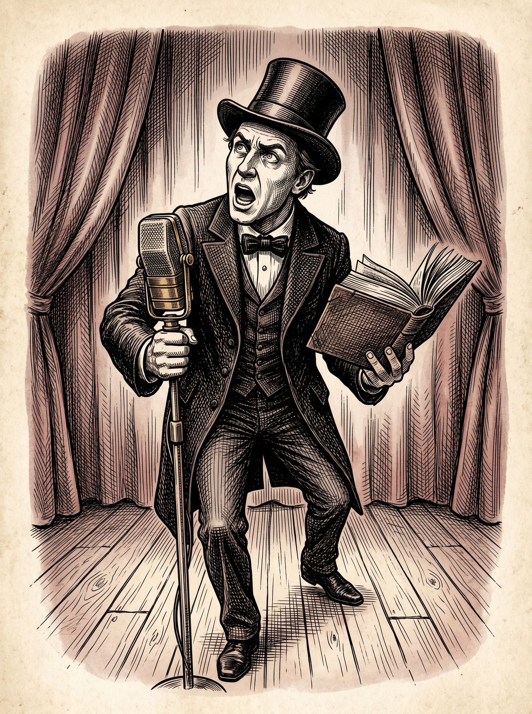

KASPERPHI
L'élégance de travers.
Textes, chansons, images et autres accidents choisis, fabriqués avec IA, mais jamais laissés en roue libre.

Avant d'entrer
AVANT D'ENTRER
Si les créations faites avec l'aide de l'intelligence artificielle vous donnent des boutons, des vapeurs ou l'envie d'écrire sur la mort de l'art, vous pouvez partir maintenant.
Sans rancune.
Dernières créations
Une opération commando à hauteur de bonbons.
Lire / écouter →Petit désordre lexical sur fond de monde fatigué.
Lire / écouter →Un spectateur lucide devant un théâtre mal fixé.
Lire / écouter →Rubriques
Textes de scène, souvenirs rejoués, auteurs dérangés et mauvaise foi élégante.
Explorer →Chansons bancales, refrains tordus, rock fatigué et mélodies de comptoir.
Explorer →Affiches, pochettes, visuels et élégance de travers.
Explorer →Monologues, fragments, catastrophes ordinaires et souvenirs maquillés.
Explorer →Univers
École primaire, boulangerie, copains, cancres et mythologies minuscules.
Explorer →Textes de scène, auteurs dérangés et littérature descendue au comptoir.
Explorer →Refrains tordus, voix imaginaires, rock fatigué et mélodies qui fument.
Explorer →Langue qui s'efface, monde qui accélère, institutions qui toussent.
Explorer →Place Arson, terrains de boules, enfance urbaine et folklore personnel.
Explorer →Formes imparfaites, phrases qui boitent et idées mal coiffées.
Explorer →C'est une porte d'entrée dans un théâtre personnel.